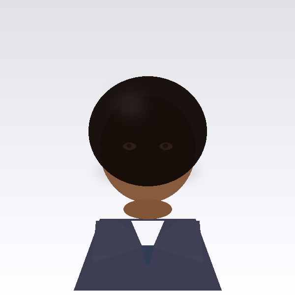
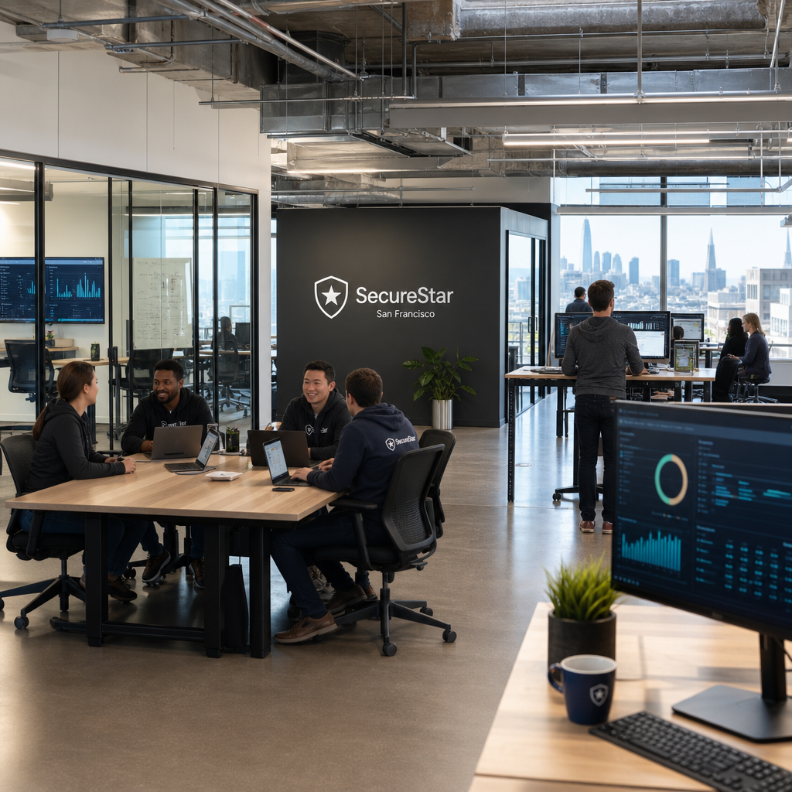

SecureStarは、フィンテックとMLプラットフォームの内部で何年も過ごしたエンジニアによって設立されました。彼らは、実際の不正リスクを抱える企業と、実際のソリューションを持つベンダーが互いに見つけられない、または見つけた後に信頼できないという同じ問題を繰り返し見てきました。
ほとんどの不正プラットフォームは、モデルのパフォーマンス指標を考えるデータサイエンティストによって構築されています。SecureStarは、規制当局の前に座ってなぜ取引が拒否されたのかを説明しなければならなかったエンジニアによって構築されました。
その経験は、私たちが行ったすべての製品決定に影響を与えました。スピードは重要です。認証に200msを追加する不正チェックは、ユーザーが感じる不正チェックです。説明可能性は重要です。コンプライアンス担当者に決定を正当化できないモデルは、資産ではなく負債です。コントロールは重要です。一律の不正モデルは誰にも合いません。
私たちは、テーブルの反対側にいたときに存在してほしかったプラットフォームとしてSecureStarを構築しました。
私たちの創業チームは、フィンテックエンジニアリング、MLリサーチ、金融コンプライアンスの経験を持ち、この製品を正しく構築するために必要な正確な組み合わせを提供します。


レイテンシーは技術的な脚注ではありません。支払い認証では、ミリ秒ごとにUXの決定が行われます。私たちはレイテンシーSLAを製品の約束として扱い、目標ではありません。
自分自身を説明できないAIシステムは信頼できません — それは規制上のリスクです。私たちは、すべての自動化された金融決定が影響を受けた人に説明可能であるべきだと信じています。
あなたは私たちよりも顧客をよく知っています。あなたのコンプライアンスチームはルールを所有するべきです。あなたのデータサイエンティストはモデルを調整するべきです。私たちはインフラを提供しますが、決定はあなたが行います。
最高のベンダー統合は、数日で完了し、数ヶ月を要せず、移行プロジェクトを必要としないものです。私たちはSDKの使いやすさ、コネクタのシンプルさ、ゼロリワークのデプロイメントにこだわります。
エンジニア、MLリサーチャー、コンプライアンススペシャリストを募集しています。また、不正インフラを評価している金融プラットフォームの場合は、ぜひお話ししましょう。